Activity: Using the jog and break corner command in sheet metal design
Click here to download the activity file.
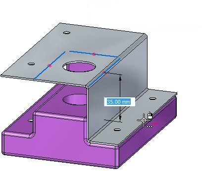
Objectives
This activity demonstrates how to create a jog in a sheet metal tab, and place flanges and trim away unwanted material from the part. In this activity you will:
-
Create a tab based on reference geometry.
-
Create the sketches needed by the jog command.
-
Set the parameters for the jog.
-
Modify the bend radius when and where appropriate.
-
Use the break corner command to get rid of sharp corners.
Start Solid Edge 2023.
Open jog_activity.psm.
This sheet metal file was created in the context of an assembly. An interpart-copy contains geometry from a part file that will be used to define the extents of the sheet metal part being created. The geometry has rounded edges with a 2.0 mm radius. Knowing this, the proper bend radius can be established.
This sheet metal file was created in the context of an assembly and inter-part geometry from a part file was imported into the file. This geometry will be used to define the extents of the sheet metal that will cover the part. It is visible in PathFinder and the display of the geometry can be toggled on or off there.
Select the Project to Sketch command .
Lock the sketch plane to the top most face on the part.
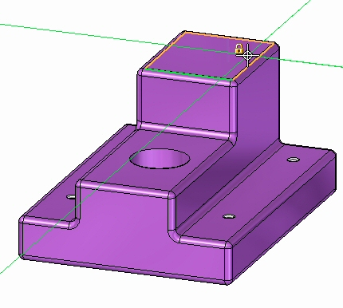
If the Project to Sketch Options dialog box appears, click Cancel to dismiss it.
Use the command to include the following geometry in the sketch:
-
The outer edges around the base. Only the straight edges need to be included.
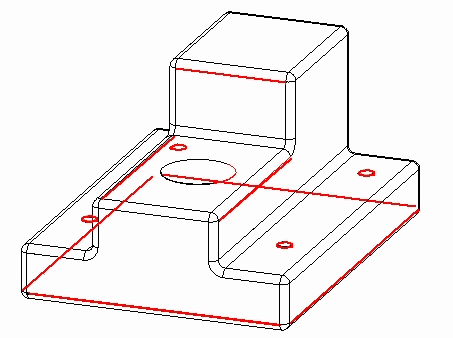
-
The 5 holes.
The sketch appears as shown.
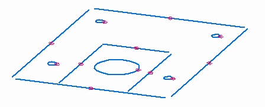
Click the Trim Corner command and trim the outer lines so that they intersect and form a closed region.
The sketch appears as shown.
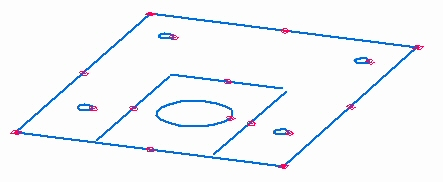
Select the region shown.
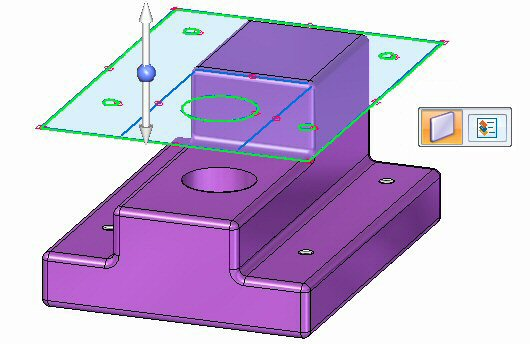
Click the top arrow to create the base feature above the part geometry as shown.
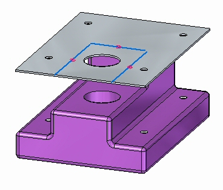
Click the Jog command and select the line shown.
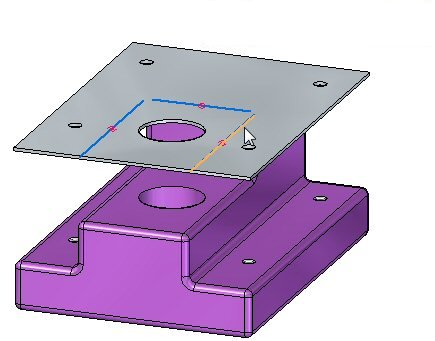
Select the direction arrow as shown.
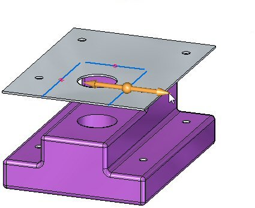
On the command bar, select the Material Outside option.
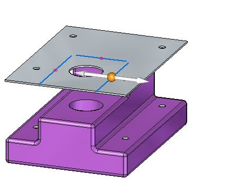
Select the Dimension to Die
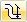
option on command bar.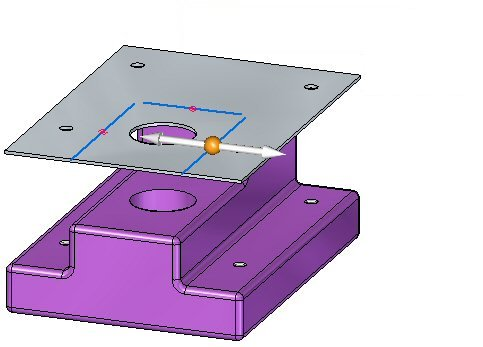
Drag the jog down by clicking on a keypoint on the lower face of the part.
The jog is created.
Observe the following about the jog just created:
-
Press Ctrl+T to rotate the view to a top view. Observe that the holes are in the part are still aligned with the holes in the sheet metal.
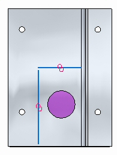
-
Press Ctrl+F to rotate the view to a front view.
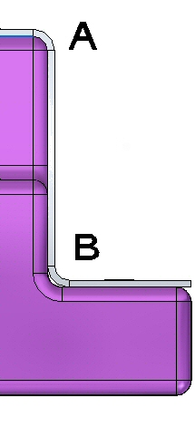
At (A) in the figure above, the sheet metal fits exactly over the 2.0 mm round on the part because the bend radius is 2.0 mm. The material thickness is 1.0 mm. The outer radius is the sum of these two values and is 3.0 mm. On the bottom bend, (B) the sheet metal does not fit exactly because of this. In the next step the bend radius will be modified so that the sheet metal part is correctly positioned at (B).
Press Ctrl+J to rotate the view. Select the bend shown, then click the text. This will allow edits to the bend radius for that bend.
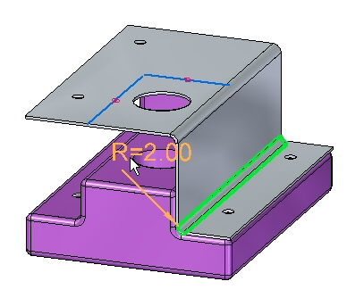
Change the Bend Radius to 1.0 mm.
Press Ctrl+F to rotate the view to a front view. Observe the bend.
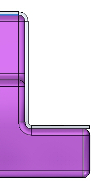
Use the same steps to place a jog on the opposite side of the part and modify the bend radius on the lower bend. The result is as shown below.
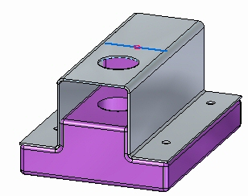
Place the last jog using the remaining line in the sketch. Modify the bend radius on the lower bend. The result is as shown below.
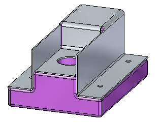
In this step the Cut command is used to trim away unwanted parts of the vertical flanges.
Select the Project to Sketch command .
Lock the sketch plane to the outer face of the vertical flange and include the following geometry in the sketch:
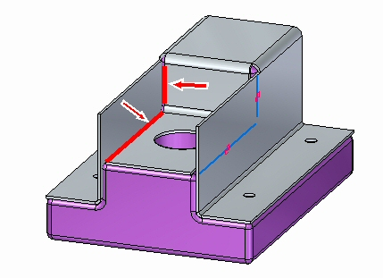
Click the Fillet command and place a 1 mm fillet between the two lines.
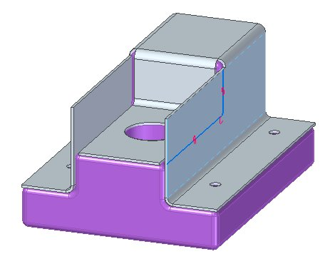
Select the region shown.
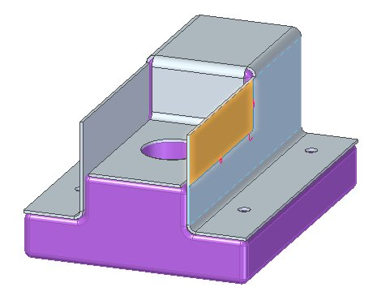
Selecting the region initiates the Cut command.
Set the Face Normal Cut Types option to Mid-Plane Cut and the Extent option to Through All.
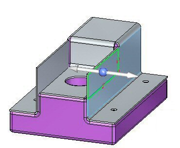
Click the left arrow.
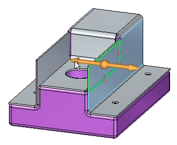
The flanges are trimmed.
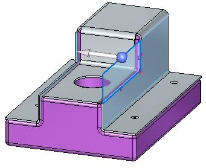
Right-click to finish the trim.
In this step the Break Corner command is used to round the sheet metal corners.
The Break Corner command can be used to either round or chamfer a corner. In this activity a 2.0 mm round will be placed on each sheet metal corner.
Click the Break Corner command .
On the command bar, set the Corner Type to Radius and the Selection Type to Face.
Select the 5 faces shown and enter a radius of 2.0 mm.
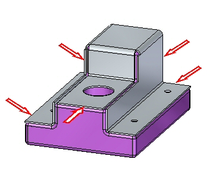
The results are shown. This completes the activity.
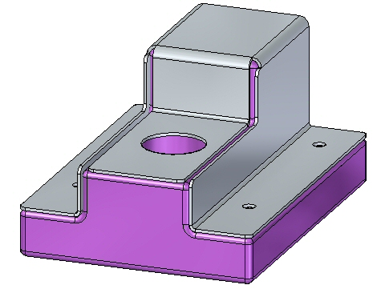
In this activity you created a sheet metal base feature and used the Jog command to form the sheet metal around and existing part. You modified the bend radius where needed and then used the Cutout command and the Break Corner command to finish the model.
-
Click the Close button in the upper - right corner of this activity window.
Answer the following questions:
-
What does the jog command do in a sheet metal document?
-
Explain the material side options when placing a jog?